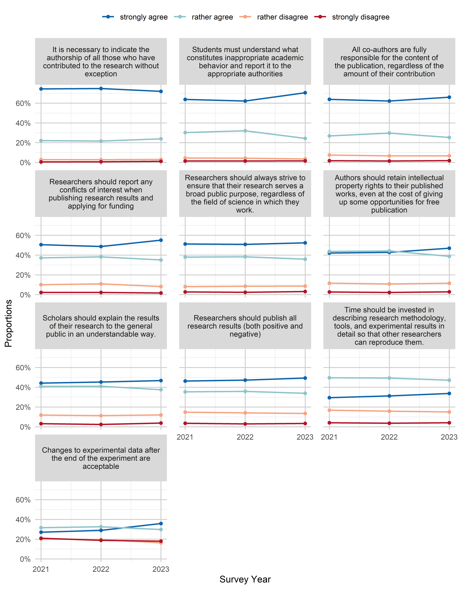

Survey Analysis - plots over time
Development over Time
Since the survey was conducted in three separate waves (2021, 2022, 2023), responses are also compared between those years. Similar to the overview plots where “don’t know” and missing responses were separated out before calculating proportions of certain response categories, these are also filtered out here. Percentages therefore refer to all respondents that chose one of the response categories presented in the figure.
Research
Open Science
out <- plot_time(df, var_overview, os, type = "agreement")
out$p
knitr::kable(out$data)| variable | value | year | n | proportion |
|---|---|---|---|---|
| Authors of research papers and peer reviewers should be able to communicate directly without intermediaries. | strongly agree | 2021 | 2717 | 36.31% |
| Authors of research papers and peer reviewers should be able to communicate directly without intermediaries. | strongly agree | 2022 | 2952 | 38.59% |
| Authors of research papers and peer reviewers should be able to communicate directly without intermediaries. | strongly agree | 2023 | 1974 | 39.07% |
| Authors of research papers and peer reviewers should be able to communicate directly without intermediaries. | rather agree | 2021 | 2943 | 39.33% |
| Authors of research papers and peer reviewers should be able to communicate directly without intermediaries. | rather agree | 2022 | 3167 | 41.40% |
| Authors of research papers and peer reviewers should be able to communicate directly without intermediaries. | rather agree | 2023 | 1849 | 36.59% |
| Authors of research papers and peer reviewers should be able to communicate directly without intermediaries. | rather disagree | 2021 | 1121 | 14.98% |
| Authors of research papers and peer reviewers should be able to communicate directly without intermediaries. | rather disagree | 2022 | 1038 | 13.57% |
| Authors of research papers and peer reviewers should be able to communicate directly without intermediaries. | rather disagree | 2023 | 752 | 14.88% |
| Authors of research papers and peer reviewers should be able to communicate directly without intermediaries. | strongly disagree | 2021 | 702 | 9.38% |
| Authors of research papers and peer reviewers should be able to communicate directly without intermediaries. | strongly disagree | 2022 | 492 | 6.43% |
| Authors of research papers and peer reviewers should be able to communicate directly without intermediaries. | strongly disagree | 2023 | 478 | 9.46% |
| Experimental data should be published as openly as possible. | strongly agree | 2021 | 2744 | 35.84% |
| Experimental data should be published as openly as possible. | strongly agree | 2022 | 2871 | 36.06% |
| Experimental data should be published as openly as possible. | strongly agree | 2023 | 1929 | 37.82% |
| Experimental data should be published as openly as possible. | rather agree | 2021 | 3668 | 47.90% |
| Experimental data should be published as openly as possible. | rather agree | 2022 | 3746 | 47.05% |
| Experimental data should be published as openly as possible. | rather agree | 2023 | 2300 | 45.10% |
| Experimental data should be published as openly as possible. | rather disagree | 2021 | 1027 | 13.41% |
| Experimental data should be published as openly as possible. | rather disagree | 2022 | 1118 | 14.04% |
| Experimental data should be published as openly as possible. | rather disagree | 2023 | 691 | 13.55% |
| Experimental data should be published as openly as possible. | strongly disagree | 2021 | 218 | 2.85% |
| Experimental data should be published as openly as possible. | strongly disagree | 2022 | 226 | 2.84% |
| Experimental data should be published as openly as possible. | strongly disagree | 2023 | 180 | 3.53% |
| I can explain what “open science” is. | strongly agree | 2021 | 2821 | 37.26% |
| I can explain what “open science” is. | strongly agree | 2022 | 2663 | 34.62% |
| I can explain what “open science” is. | strongly agree | 2023 | 2085 | 41.72% |
| I can explain what “open science” is. | rather agree | 2021 | 3969 | 52.42% |
| I can explain what “open science” is. | rather agree | 2022 | 3991 | 51.88% |
| I can explain what “open science” is. | rather agree | 2023 | 2291 | 45.84% |
| I can explain what “open science” is. | rather disagree | 2021 | 635 | 8.39% |
| I can explain what “open science” is. | rather disagree | 2022 | 812 | 10.56% |
| I can explain what “open science” is. | rather disagree | 2023 | 455 | 9.10% |
| I can explain what “open science” is. | strongly disagree | 2021 | 147 | 1.94% |
| I can explain what “open science” is. | strongly disagree | 2022 | 227 | 2.95% |
| I can explain what “open science” is. | strongly disagree | 2023 | 167 | 3.34% |
| If software development is part of a research project, the source code should be published alongside the relevant scientific papers. | strongly agree | 2021 | 1577 | 24.61% |
| If software development is part of a research project, the source code should be published alongside the relevant scientific papers. | strongly agree | 2022 | 1675 | 25.01% |
| If software development is part of a research project, the source code should be published alongside the relevant scientific papers. | strongly agree | 2023 | 1273 | 28.18% |
| If software development is part of a research project, the source code should be published alongside the relevant scientific papers. | rather agree | 2021 | 2583 | 40.32% |
| If software development is part of a research project, the source code should be published alongside the relevant scientific papers. | rather agree | 2022 | 2648 | 39.54% |
| If software development is part of a research project, the source code should be published alongside the relevant scientific papers. | rather agree | 2023 | 1751 | 38.76% |
| If software development is part of a research project, the source code should be published alongside the relevant scientific papers. | rather disagree | 2021 | 1565 | 24.43% |
| If software development is part of a research project, the source code should be published alongside the relevant scientific papers. | rather disagree | 2022 | 1662 | 24.82% |
| If software development is part of a research project, the source code should be published alongside the relevant scientific papers. | rather disagree | 2023 | 1031 | 22.82% |
| If software development is part of a research project, the source code should be published alongside the relevant scientific papers. | strongly disagree | 2021 | 682 | 10.64% |
| If software development is part of a research project, the source code should be published alongside the relevant scientific papers. | strongly disagree | 2022 | 712 | 10.63% |
| If software development is part of a research project, the source code should be published alongside the relevant scientific papers. | strongly disagree | 2023 | 462 | 10.23% |
| Research papers should be openly available even before the official peer review process, i.e. before a thorough review of their content. | strongly agree | 2021 | 1236 | 15.49% |
| Research papers should be openly available even before the official peer review process, i.e. before a thorough review of their content. | strongly agree | 2022 | 1237 | 14.95% |
| Research papers should be openly available even before the official peer review process, i.e. before a thorough review of their content. | strongly agree | 2023 | 1122 | 21.56% |
| Research papers should be openly available even before the official peer review process, i.e. before a thorough review of their content. | rather agree | 2021 | 1707 | 21.40% |
| Research papers should be openly available even before the official peer review process, i.e. before a thorough review of their content. | rather agree | 2022 | 1731 | 20.92% |
| Research papers should be openly available even before the official peer review process, i.e. before a thorough review of their content. | rather agree | 2023 | 1213 | 23.30% |
| Research papers should be openly available even before the official peer review process, i.e. before a thorough review of their content. | rather disagree | 2021 | 3119 | 39.10% |
| Research papers should be openly available even before the official peer review process, i.e. before a thorough review of their content. | rather disagree | 2022 | 3215 | 38.85% |
| Research papers should be openly available even before the official peer review process, i.e. before a thorough review of their content. | rather disagree | 2023 | 1780 | 34.20% |
| Research papers should be openly available even before the official peer review process, i.e. before a thorough review of their content. | strongly disagree | 2021 | 1916 | 24.02% |
| Research papers should be openly available even before the official peer review process, i.e. before a thorough review of their content. | strongly disagree | 2022 | 2093 | 25.29% |
| Research papers should be openly available even before the official peer review process, i.e. before a thorough review of their content. | strongly disagree | 2023 | 1090 | 20.94% |
| Research results should be in open access, i.e. freely available to the academic community and the general public. | strongly agree | 2021 | 5015 | 58.22% |
| Research results should be in open access, i.e. freely available to the academic community and the general public. | strongly agree | 2022 | 5061 | 56.48% |
| Research results should be in open access, i.e. freely available to the academic community and the general public. | strongly agree | 2023 | 3210 | 58.32% |
| Research results should be in open access, i.e. freely available to the academic community and the general public. | rather agree | 2021 | 2917 | 33.86% |
| Research results should be in open access, i.e. freely available to the academic community and the general public. | rather agree | 2022 | 3202 | 35.74% |
| Research results should be in open access, i.e. freely available to the academic community and the general public. | rather agree | 2023 | 1942 | 35.28% |
| Research results should be in open access, i.e. freely available to the academic community and the general public. | rather disagree | 2021 | 541 | 6.28% |
| Research results should be in open access, i.e. freely available to the academic community and the general public. | rather disagree | 2022 | 571 | 6.37% |
| Research results should be in open access, i.e. freely available to the academic community and the general public. | rather disagree | 2023 | 288 | 5.23% |
| Research results should be in open access, i.e. freely available to the academic community and the general public. | strongly disagree | 2021 | 141 | 1.64% |
| Research results should be in open access, i.e. freely available to the academic community and the general public. | strongly disagree | 2022 | 126 | 1.41% |
| Research results should be in open access, i.e. freely available to the academic community and the general public. | strongly disagree | 2023 | 64 | 1.16% |
| Researchers should invest time in describing their experimental data with appropriate metadata so that the data can be easily found and reused. | strongly agree | 2021 | 2099 | 30.09% |
| Researchers should invest time in describing their experimental data with appropriate metadata so that the data can be easily found and reused. | strongly agree | 2022 | 2363 | 32.72% |
| Researchers should invest time in describing their experimental data with appropriate metadata so that the data can be easily found and reused. | strongly agree | 2023 | 1522 | 31.25% |
| Researchers should invest time in describing their experimental data with appropriate metadata so that the data can be easily found and reused. | rather agree | 2021 | 3456 | 49.55% |
| Researchers should invest time in describing their experimental data with appropriate metadata so that the data can be easily found and reused. | rather agree | 2022 | 3589 | 49.70% |
| Researchers should invest time in describing their experimental data with appropriate metadata so that the data can be easily found and reused. | rather agree | 2023 | 2378 | 48.82% |
| Researchers should invest time in describing their experimental data with appropriate metadata so that the data can be easily found and reused. | rather disagree | 2021 | 1126 | 16.14% |
| Researchers should invest time in describing their experimental data with appropriate metadata so that the data can be easily found and reused. | rather disagree | 2022 | 1040 | 14.40% |
| Researchers should invest time in describing their experimental data with appropriate metadata so that the data can be easily found and reused. | rather disagree | 2023 | 786 | 16.14% |
| Researchers should invest time in describing their experimental data with appropriate metadata so that the data can be easily found and reused. | strongly disagree | 2021 | 294 | 4.22% |
| Researchers should invest time in describing their experimental data with appropriate metadata so that the data can be easily found and reused. | strongly disagree | 2022 | 230 | 3.18% |
| Researchers should invest time in describing their experimental data with appropriate metadata so that the data can be easily found and reused. | strongly disagree | 2023 | 185 | 3.80% |
| Researchers should publish author’s versions of manuscripts on open online resources such as Zenodo, institutional repositories, etc. | strongly agree | 2021 | 2155 | 31.38% |
| Researchers should publish author’s versions of manuscripts on open online resources such as Zenodo, institutional repositories, etc. | strongly agree | 2022 | 2184 | 31.63% |
| Researchers should publish author’s versions of manuscripts on open online resources such as Zenodo, institutional repositories, etc. | strongly agree | 2023 | 1726 | 36.12% |
| Researchers should publish author’s versions of manuscripts on open online resources such as Zenodo, institutional repositories, etc. | rather agree | 2021 | 2985 | 43.47% |
| Researchers should publish author’s versions of manuscripts on open online resources such as Zenodo, institutional repositories, etc. | rather agree | 2022 | 3117 | 45.15% |
| Researchers should publish author’s versions of manuscripts on open online resources such as Zenodo, institutional repositories, etc. | rather agree | 2023 | 1860 | 38.92% |
| Researchers should publish author’s versions of manuscripts on open online resources such as Zenodo, institutional repositories, etc. | rather disagree | 2021 | 1256 | 18.29% |
| Researchers should publish author’s versions of manuscripts on open online resources such as Zenodo, institutional repositories, etc. | rather disagree | 2022 | 1192 | 17.27% |
| Researchers should publish author’s versions of manuscripts on open online resources such as Zenodo, institutional repositories, etc. | rather disagree | 2023 | 811 | 16.97% |
| Researchers should publish author’s versions of manuscripts on open online resources such as Zenodo, institutional repositories, etc. | strongly disagree | 2021 | 471 | 6.86% |
| Researchers should publish author’s versions of manuscripts on open online resources such as Zenodo, institutional repositories, etc. | strongly disagree | 2022 | 411 | 5.95% |
| Researchers should publish author’s versions of manuscripts on open online resources such as Zenodo, institutional repositories, etc. | strongly disagree | 2023 | 382 | 7.99% |
| The names of peer reviewers of research papers should be made public, regardless of whether their conclusion is positive or negative. | strongly agree | 2021 | 3699 | 46.69% |
| The names of peer reviewers of research papers should be made public, regardless of whether their conclusion is positive or negative. | strongly agree | 2022 | 3872 | 47.59% |
| The names of peer reviewers of research papers should be made public, regardless of whether their conclusion is positive or negative. | strongly agree | 2023 | 2217 | 42.75% |
| The names of peer reviewers of research papers should be made public, regardless of whether their conclusion is positive or negative. | rather agree | 2021 | 2767 | 34.93% |
| The names of peer reviewers of research papers should be made public, regardless of whether their conclusion is positive or negative. | rather agree | 2022 | 2995 | 36.81% |
| The names of peer reviewers of research papers should be made public, regardless of whether their conclusion is positive or negative. | rather agree | 2023 | 1936 | 37.33% |
| The names of peer reviewers of research papers should be made public, regardless of whether their conclusion is positive or negative. | rather disagree | 2021 | 956 | 12.07% |
| The names of peer reviewers of research papers should be made public, regardless of whether their conclusion is positive or negative. | rather disagree | 2022 | 901 | 11.07% |
| The names of peer reviewers of research papers should be made public, regardless of whether their conclusion is positive or negative. | rather disagree | 2023 | 708 | 13.65% |
| The names of peer reviewers of research papers should be made public, regardless of whether their conclusion is positive or negative. | strongly disagree | 2021 | 500 | 6.31% |
| The names of peer reviewers of research papers should be made public, regardless of whether their conclusion is positive or negative. | strongly disagree | 2022 | 369 | 4.53% |
| The names of peer reviewers of research papers should be made public, regardless of whether their conclusion is positive or negative. | strongly disagree | 2023 | 325 | 6.27% |
| The texts of positive and negative peer reviews of research papers should be published alongside these papers. | strongly agree | 2021 | 2417 | 31.81% |
| The texts of positive and negative peer reviews of research papers should be published alongside these papers. | strongly agree | 2022 | 2611 | 33.74% |
| The texts of positive and negative peer reviews of research papers should be published alongside these papers. | strongly agree | 2023 | 1760 | 34.62% |
| The texts of positive and negative peer reviews of research papers should be published alongside these papers. | rather agree | 2021 | 3045 | 40.08% |
| The texts of positive and negative peer reviews of research papers should be published alongside these papers. | rather agree | 2022 | 3266 | 42.21% |
| The texts of positive and negative peer reviews of research papers should be published alongside these papers. | rather agree | 2023 | 1942 | 38.20% |
| The texts of positive and negative peer reviews of research papers should be published alongside these papers. | rather disagree | 2021 | 1504 | 19.79% |
| The texts of positive and negative peer reviews of research papers should be published alongside these papers. | rather disagree | 2022 | 1366 | 17.65% |
| The texts of positive and negative peer reviews of research papers should be published alongside these papers. | rather disagree | 2023 | 976 | 19.20% |
| The texts of positive and negative peer reviews of research papers should be published alongside these papers. | strongly disagree | 2021 | 632 | 8.32% |
| The texts of positive and negative peer reviews of research papers should be published alongside these papers. | strongly disagree | 2022 | 495 | 6.40% |
| The texts of positive and negative peer reviews of research papers should be published alongside these papers. | strongly disagree | 2023 | 406 | 7.99% |
Reporting and Academic Integrity
out <- plot_time(df, var_overview, raia, type = "agreement")
out$p
knitr::kable(out$data)| variable | value | year | n | proportion |
|---|---|---|---|---|
| All co-authors are fully responsible for the content of the publication, regardless of the amount of their contribution | strongly agree | 2021 | 5671 | 63.83% |
| All co-authors are fully responsible for the content of the publication, regardless of the amount of their contribution | strongly agree | 2022 | 5708 | 62.17% |
| All co-authors are fully responsible for the content of the publication, regardless of the amount of their contribution | strongly agree | 2023 | 3756 | 66.07% |
| All co-authors are fully responsible for the content of the publication, regardless of the amount of their contribution | rather agree | 2021 | 2387 | 26.87% |
| All co-authors are fully responsible for the content of the publication, regardless of the amount of their contribution | rather agree | 2022 | 2730 | 29.73% |
| All co-authors are fully responsible for the content of the publication, regardless of the amount of their contribution | rather agree | 2023 | 1440 | 25.33% |
| All co-authors are fully responsible for the content of the publication, regardless of the amount of their contribution | rather disagree | 2021 | 668 | 7.52% |
| All co-authors are fully responsible for the content of the publication, regardless of the amount of their contribution | rather disagree | 2022 | 612 | 6.67% |
| All co-authors are fully responsible for the content of the publication, regardless of the amount of their contribution | rather disagree | 2023 | 385 | 6.77% |
| All co-authors are fully responsible for the content of the publication, regardless of the amount of their contribution | strongly disagree | 2021 | 158 | 1.78% |
| All co-authors are fully responsible for the content of the publication, regardless of the amount of their contribution | strongly disagree | 2022 | 132 | 1.44% |
| All co-authors are fully responsible for the content of the publication, regardless of the amount of their contribution | strongly disagree | 2023 | 104 | 1.83% |
| Authors should retain intellectual property rights to their published works, even at the cost of giving up some opportunities for free publication | strongly agree | 2021 | 3170 | 42.12% |
| Authors should retain intellectual property rights to their published works, even at the cost of giving up some opportunities for free publication | strongly agree | 2022 | 3335 | 42.77% |
| Authors should retain intellectual property rights to their published works, even at the cost of giving up some opportunities for free publication | strongly agree | 2023 | 2373 | 46.97% |
| Authors should retain intellectual property rights to their published works, even at the cost of giving up some opportunities for free publication | rather agree | 2021 | 3288 | 43.69% |
| Authors should retain intellectual property rights to their published works, even at the cost of giving up some opportunities for free publication | rather agree | 2022 | 3452 | 44.27% |
| Authors should retain intellectual property rights to their published works, even at the cost of giving up some opportunities for free publication | rather agree | 2023 | 1956 | 38.72% |
| Authors should retain intellectual property rights to their published works, even at the cost of giving up some opportunities for free publication | rather disagree | 2021 | 869 | 11.55% |
| Authors should retain intellectual property rights to their published works, even at the cost of giving up some opportunities for free publication | rather disagree | 2022 | 841 | 10.78% |
| Authors should retain intellectual property rights to their published works, even at the cost of giving up some opportunities for free publication | rather disagree | 2023 | 581 | 11.50% |
| Authors should retain intellectual property rights to their published works, even at the cost of giving up some opportunities for free publication | strongly disagree | 2021 | 199 | 2.64% |
| Authors should retain intellectual property rights to their published works, even at the cost of giving up some opportunities for free publication | strongly disagree | 2022 | 170 | 2.18% |
| Authors should retain intellectual property rights to their published works, even at the cost of giving up some opportunities for free publication | strongly disagree | 2023 | 142 | 2.81% |
| Changes to experimental data after the end of the experiment are acceptable | strongly agree | 2021 | 2217 | 27.08% |
| Changes to experimental data after the end of the experiment are acceptable | strongly agree | 2022 | 2436 | 28.93% |
| Changes to experimental data after the end of the experiment are acceptable | strongly agree | 2023 | 1900 | 35.84% |
| Changes to experimental data after the end of the experiment are acceptable | rather agree | 2021 | 2594 | 31.68% |
| Changes to experimental data after the end of the experiment are acceptable | rather agree | 2022 | 2744 | 32.59% |
| Changes to experimental data after the end of the experiment are acceptable | rather agree | 2023 | 1581 | 29.82% |
| Changes to experimental data after the end of the experiment are acceptable | rather disagree | 2021 | 1659 | 20.26% |
| Changes to experimental data after the end of the experiment are acceptable | rather disagree | 2022 | 1650 | 19.60% |
| Changes to experimental data after the end of the experiment are acceptable | rather disagree | 2023 | 865 | 16.32% |
| Changes to experimental data after the end of the experiment are acceptable | strongly disagree | 2021 | 1718 | 20.98% |
| Changes to experimental data after the end of the experiment are acceptable | strongly disagree | 2022 | 1589 | 18.87% |
| Changes to experimental data after the end of the experiment are acceptable | strongly disagree | 2023 | 955 | 18.02% |
| It is necessary to indicate the authorship of all those who have contributed to the research without exception | strongly agree | 2021 | 6695 | 74.46% |
| It is necessary to indicate the authorship of all those who have contributed to the research without exception | strongly agree | 2022 | 7081 | 74.85% |
| It is necessary to indicate the authorship of all those who have contributed to the research without exception | strongly agree | 2023 | 4103 | 71.91% |
| It is necessary to indicate the authorship of all those who have contributed to the research without exception | rather agree | 2021 | 1987 | 22.10% |
| It is necessary to indicate the authorship of all those who have contributed to the research without exception | rather agree | 2022 | 2050 | 21.67% |
| It is necessary to indicate the authorship of all those who have contributed to the research without exception | rather agree | 2023 | 1363 | 23.89% |
| It is necessary to indicate the authorship of all those who have contributed to the research without exception | rather disagree | 2021 | 259 | 2.88% |
| It is necessary to indicate the authorship of all those who have contributed to the research without exception | rather disagree | 2022 | 265 | 2.80% |
| It is necessary to indicate the authorship of all those who have contributed to the research without exception | rather disagree | 2023 | 176 | 3.08% |
| It is necessary to indicate the authorship of all those who have contributed to the research without exception | strongly disagree | 2021 | 51 | 0.57% |
| It is necessary to indicate the authorship of all those who have contributed to the research without exception | strongly disagree | 2022 | 64 | 0.68% |
| It is necessary to indicate the authorship of all those who have contributed to the research without exception | strongly disagree | 2023 | 64 | 1.12% |
| Researchers should always strive to ensure that their research serves a broad public purpose, regardless of the field of science in which they work. | strongly agree | 2021 | 4045 | 51.25% |
| Researchers should always strive to ensure that their research serves a broad public purpose, regardless of the field of science in which they work. | strongly agree | 2022 | 4112 | 50.87% |
| Researchers should always strive to ensure that their research serves a broad public purpose, regardless of the field of science in which they work. | strongly agree | 2023 | 2751 | 52.39% |
| Researchers should always strive to ensure that their research serves a broad public purpose, regardless of the field of science in which they work. | rather agree | 2021 | 2995 | 37.95% |
| Researchers should always strive to ensure that their research serves a broad public purpose, regardless of the field of science in which they work. | rather agree | 2022 | 3093 | 38.27% |
| Researchers should always strive to ensure that their research serves a broad public purpose, regardless of the field of science in which they work. | rather agree | 2023 | 1882 | 35.84% |
| Researchers should always strive to ensure that their research serves a broad public purpose, regardless of the field of science in which they work. | rather disagree | 2021 | 636 | 8.06% |
| Researchers should always strive to ensure that their research serves a broad public purpose, regardless of the field of science in which they work. | rather disagree | 2022 | 688 | 8.51% |
| Researchers should always strive to ensure that their research serves a broad public purpose, regardless of the field of science in which they work. | rather disagree | 2023 | 454 | 8.65% |
| Researchers should always strive to ensure that their research serves a broad public purpose, regardless of the field of science in which they work. | strongly disagree | 2021 | 216 | 2.74% |
| Researchers should always strive to ensure that their research serves a broad public purpose, regardless of the field of science in which they work. | strongly disagree | 2022 | 190 | 2.35% |
| Researchers should always strive to ensure that their research serves a broad public purpose, regardless of the field of science in which they work. | strongly disagree | 2023 | 164 | 3.12% |
| Researchers should publish all research results (both positive and negative) | strongly agree | 2021 | 3975 | 46.29% |
| Researchers should publish all research results (both positive and negative) | strongly agree | 2022 | 4189 | 47.22% |
| Researchers should publish all research results (both positive and negative) | strongly agree | 2023 | 2728 | 49.32% |
| Researchers should publish all research results (both positive and negative) | rather agree | 2021 | 3039 | 35.39% |
| Researchers should publish all research results (both positive and negative) | rather agree | 2022 | 3178 | 35.82% |
| Researchers should publish all research results (both positive and negative) | rather agree | 2023 | 1872 | 33.85% |
| Researchers should publish all research results (both positive and negative) | rather disagree | 2021 | 1268 | 14.76% |
| Researchers should publish all research results (both positive and negative) | rather disagree | 2022 | 1247 | 14.06% |
| Researchers should publish all research results (both positive and negative) | rather disagree | 2023 | 744 | 13.45% |
| Researchers should publish all research results (both positive and negative) | strongly disagree | 2021 | 306 | 3.56% |
| Researchers should publish all research results (both positive and negative) | strongly disagree | 2022 | 257 | 2.90% |
| Researchers should publish all research results (both positive and negative) | strongly disagree | 2023 | 187 | 3.38% |
| Researchers should report any conflicts of interest when publishing research results and applying for funding | strongly agree | 2021 | 4153 | 50.56% |
| Researchers should report any conflicts of interest when publishing research results and applying for funding | strongly agree | 2022 | 4078 | 48.71% |
| Researchers should report any conflicts of interest when publishing research results and applying for funding | strongly agree | 2023 | 3007 | 55.14% |
| Researchers should report any conflicts of interest when publishing research results and applying for funding | rather agree | 2021 | 3056 | 37.20% |
| Researchers should report any conflicts of interest when publishing research results and applying for funding | rather agree | 2022 | 3197 | 38.19% |
| Researchers should report any conflicts of interest when publishing research results and applying for funding | rather agree | 2023 | 1912 | 35.06% |
| Researchers should report any conflicts of interest when publishing research results and applying for funding | rather disagree | 2021 | 826 | 10.06% |
| Researchers should report any conflicts of interest when publishing research results and applying for funding | rather disagree | 2022 | 914 | 10.92% |
| Researchers should report any conflicts of interest when publishing research results and applying for funding | rather disagree | 2023 | 445 | 8.16% |
| Researchers should report any conflicts of interest when publishing research results and applying for funding | strongly disagree | 2021 | 179 | 2.18% |
| Researchers should report any conflicts of interest when publishing research results and applying for funding | strongly disagree | 2022 | 183 | 2.19% |
| Researchers should report any conflicts of interest when publishing research results and applying for funding | strongly disagree | 2023 | 89 | 1.63% |
| Scholars should explain the results of their research to the general public in an understandable way. | strongly agree | 2021 | 3615 | 44.20% |
| Scholars should explain the results of their research to the general public in an understandable way. | strongly agree | 2022 | 3870 | 45.32% |
| Scholars should explain the results of their research to the general public in an understandable way. | strongly agree | 2023 | 2504 | 46.79% |
| Scholars should explain the results of their research to the general public in an understandable way. | rather agree | 2021 | 3341 | 40.85% |
| Scholars should explain the results of their research to the general public in an understandable way. | rather agree | 2022 | 3504 | 41.03% |
| Scholars should explain the results of their research to the general public in an understandable way. | rather agree | 2023 | 2007 | 37.50% |
| Scholars should explain the results of their research to the general public in an understandable way. | rather disagree | 2021 | 965 | 11.80% |
| Scholars should explain the results of their research to the general public in an understandable way. | rather disagree | 2022 | 964 | 11.29% |
| Scholars should explain the results of their research to the general public in an understandable way. | rather disagree | 2023 | 641 | 11.98% |
| Scholars should explain the results of their research to the general public in an understandable way. | strongly disagree | 2021 | 257 | 3.14% |
| Scholars should explain the results of their research to the general public in an understandable way. | strongly disagree | 2022 | 202 | 2.37% |
| Scholars should explain the results of their research to the general public in an understandable way. | strongly disagree | 2023 | 200 | 3.74% |
| Time should be invested in describing research methodology, tools, and experimental results in detail so that other researchers can reproduce them. | strongly agree | 2021 | 2099 | 29.47% |
| Time should be invested in describing research methodology, tools, and experimental results in detail so that other researchers can reproduce them. | strongly agree | 2022 | 2294 | 31.21% |
| Time should be invested in describing research methodology, tools, and experimental results in detail so that other researchers can reproduce them. | strongly agree | 2023 | 1681 | 33.76% |
| Time should be invested in describing research methodology, tools, and experimental results in detail so that other researchers can reproduce them. | rather agree | 2021 | 3535 | 49.63% |
| Time should be invested in describing research methodology, tools, and experimental results in detail so that other researchers can reproduce them. | rather agree | 2022 | 3628 | 49.36% |
| Time should be invested in describing research methodology, tools, and experimental results in detail so that other researchers can reproduce them. | rather agree | 2023 | 2349 | 47.18% |
| Time should be invested in describing research methodology, tools, and experimental results in detail so that other researchers can reproduce them. | rather disagree | 2021 | 1195 | 16.78% |
| Time should be invested in describing research methodology, tools, and experimental results in detail so that other researchers can reproduce them. | rather disagree | 2022 | 1162 | 15.81% |
| Time should be invested in describing research methodology, tools, and experimental results in detail so that other researchers can reproduce them. | rather disagree | 2023 | 746 | 14.98% |
| Time should be invested in describing research methodology, tools, and experimental results in detail so that other researchers can reproduce them. | strongly disagree | 2021 | 293 | 4.11% |
| Time should be invested in describing research methodology, tools, and experimental results in detail so that other researchers can reproduce them. | strongly disagree | 2022 | 266 | 3.62% |
| Time should be invested in describing research methodology, tools, and experimental results in detail so that other researchers can reproduce them. | strongly disagree | 2023 | 203 | 4.08% |
out <- plot_time(df, var_overview, raif, type = "frequency")
out$p
knitr::kable(out$data)| variable | value | year | n | proportion |
|---|---|---|---|---|
| A person attributes to himself or herself the authorship of a work (assignment, article, etc.) that he or she did not actually perform, but arranged for others to perform it for a fee or in another way. | very often | 2021 | 291 | 5.15% |
| A person attributes to himself or herself the authorship of a work (assignment, article, etc.) that he or she did not actually perform, but arranged for others to perform it for a fee or in another way. | very often | 2022 | 307 | 5.30% |
| A person attributes to himself or herself the authorship of a work (assignment, article, etc.) that he or she did not actually perform, but arranged for others to perform it for a fee or in another way. | very often | 2023 | 253 | 6.71% |
| A person attributes to himself or herself the authorship of a work (assignment, article, etc.) that he or she did not actually perform, but arranged for others to perform it for a fee or in another way. | frequently | 2021 | 531 | 9.39% |
| A person attributes to himself or herself the authorship of a work (assignment, article, etc.) that he or she did not actually perform, but arranged for others to perform it for a fee or in another way. | frequently | 2022 | 453 | 7.82% |
| A person attributes to himself or herself the authorship of a work (assignment, article, etc.) that he or she did not actually perform, but arranged for others to perform it for a fee or in another way. | frequently | 2023 | 392 | 10.40% |
| A person attributes to himself or herself the authorship of a work (assignment, article, etc.) that he or she did not actually perform, but arranged for others to perform it for a fee or in another way. | sometimes | 2021 | 1145 | 20.25% |
| A person attributes to himself or herself the authorship of a work (assignment, article, etc.) that he or she did not actually perform, but arranged for others to perform it for a fee or in another way. | sometimes | 2022 | 1044 | 18.02% |
| A person attributes to himself or herself the authorship of a work (assignment, article, etc.) that he or she did not actually perform, but arranged for others to perform it for a fee or in another way. | sometimes | 2023 | 902 | 23.93% |
| A person attributes to himself or herself the authorship of a work (assignment, article, etc.) that he or she did not actually perform, but arranged for others to perform it for a fee or in another way. | rarely | 2021 | 1101 | 19.48% |
| A person attributes to himself or herself the authorship of a work (assignment, article, etc.) that he or she did not actually perform, but arranged for others to perform it for a fee or in another way. | rarely | 2022 | 1139 | 19.66% |
| A person attributes to himself or herself the authorship of a work (assignment, article, etc.) that he or she did not actually perform, but arranged for others to perform it for a fee or in another way. | rarely | 2023 | 632 | 16.77% |
| A person attributes to himself or herself the authorship of a work (assignment, article, etc.) that he or she did not actually perform, but arranged for others to perform it for a fee or in another way. | never | 2021 | 2585 | 45.73% |
| A person attributes to himself or herself the authorship of a work (assignment, article, etc.) that he or she did not actually perform, but arranged for others to perform it for a fee or in another way. | never | 2022 | 2850 | 49.20% |
| A person attributes to himself or herself the authorship of a work (assignment, article, etc.) that he or she did not actually perform, but arranged for others to perform it for a fee or in another way. | never | 2023 | 1590 | 42.19% |
| Making up data or facts about a scientific activity, for example, a research experiment. | very often | 2021 | 159 | 2.91% |
| Making up data or facts about a scientific activity, for example, a research experiment. | very often | 2022 | 164 | 2.93% |
| Making up data or facts about a scientific activity, for example, a research experiment. | very often | 2023 | 167 | 4.56% |
| Making up data or facts about a scientific activity, for example, a research experiment. | frequently | 2021 | 320 | 5.86% |
| Making up data or facts about a scientific activity, for example, a research experiment. | frequently | 2022 | 256 | 4.57% |
| Making up data or facts about a scientific activity, for example, a research experiment. | frequently | 2023 | 307 | 8.39% |
| Making up data or facts about a scientific activity, for example, a research experiment. | sometimes | 2021 | 916 | 16.76% |
| Making up data or facts about a scientific activity, for example, a research experiment. | sometimes | 2022 | 769 | 13.73% |
| Making up data or facts about a scientific activity, for example, a research experiment. | sometimes | 2023 | 734 | 20.06% |
| Making up data or facts about a scientific activity, for example, a research experiment. | rarely | 2021 | 1040 | 19.03% |
| Making up data or facts about a scientific activity, for example, a research experiment. | rarely | 2022 | 985 | 17.59% |
| Making up data or facts about a scientific activity, for example, a research experiment. | rarely | 2023 | 594 | 16.23% |
| Making up data or facts about a scientific activity, for example, a research experiment. | never | 2021 | 3030 | 55.44% |
| Making up data or facts about a scientific activity, for example, a research experiment. | never | 2022 | 3426 | 61.18% |
| Making up data or facts about a scientific activity, for example, a research experiment. | never | 2023 | 1857 | 50.75% |
| Selective citations to support one’s conclusions or to please editors, reviewers, colleagues, etc. | very often | 2021 | 260 | 4.62% |
| Selective citations to support one’s conclusions or to please editors, reviewers, colleagues, etc. | very often | 2022 | 291 | 5.24% |
| Selective citations to support one’s conclusions or to please editors, reviewers, colleagues, etc. | very often | 2023 | 273 | 7.25% |
| Selective citations to support one’s conclusions or to please editors, reviewers, colleagues, etc. | frequently | 2021 | 764 | 13.57% |
| Selective citations to support one’s conclusions or to please editors, reviewers, colleagues, etc. | frequently | 2022 | 681 | 12.26% |
| Selective citations to support one’s conclusions or to please editors, reviewers, colleagues, etc. | frequently | 2023 | 546 | 14.49% |
| Selective citations to support one’s conclusions or to please editors, reviewers, colleagues, etc. | sometimes | 2021 | 1467 | 26.05% |
| Selective citations to support one’s conclusions or to please editors, reviewers, colleagues, etc. | sometimes | 2022 | 1399 | 25.19% |
| Selective citations to support one’s conclusions or to please editors, reviewers, colleagues, etc. | sometimes | 2023 | 905 | 24.02% |
| Selective citations to support one’s conclusions or to please editors, reviewers, colleagues, etc. | rarely | 2021 | 1298 | 23.05% |
| Selective citations to support one’s conclusions or to please editors, reviewers, colleagues, etc. | rarely | 2022 | 1270 | 22.87% |
| Selective citations to support one’s conclusions or to please editors, reviewers, colleagues, etc. | rarely | 2023 | 758 | 20.12% |
| Selective citations to support one’s conclusions or to please editors, reviewers, colleagues, etc. | never | 2021 | 1842 | 32.71% |
| Selective citations to support one’s conclusions or to please editors, reviewers, colleagues, etc. | never | 2022 | 1912 | 34.43% |
| Selective citations to support one’s conclusions or to please editors, reviewers, colleagues, etc. | never | 2023 | 1285 | 34.11% |
| The author passes off other people’s academic achievements as his own. | very often | 2021 | 143 | 2.51% |
| The author passes off other people’s academic achievements as his own. | very often | 2022 | 142 | 2.43% |
| The author passes off other people’s academic achievements as his own. | very often | 2023 | 191 | 5.13% |
| The author passes off other people’s academic achievements as his own. | frequently | 2021 | 297 | 5.21% |
| The author passes off other people’s academic achievements as his own. | frequently | 2022 | 248 | 4.25% |
| The author passes off other people’s academic achievements as his own. | frequently | 2023 | 254 | 6.82% |
| The author passes off other people’s academic achievements as his own. | sometimes | 2021 | 757 | 13.29% |
| The author passes off other people’s academic achievements as his own. | sometimes | 2022 | 671 | 11.50% |
| The author passes off other people’s academic achievements as his own. | sometimes | 2023 | 642 | 17.25% |
| The author passes off other people’s academic achievements as his own. | rarely | 2021 | 1012 | 17.76% |
| The author passes off other people’s academic achievements as his own. | rarely | 2022 | 975 | 16.71% |
| The author passes off other people’s academic achievements as his own. | rarely | 2023 | 584 | 15.69% |
| The author passes off other people’s academic achievements as his own. | never | 2021 | 3488 | 61.23% |
| The author passes off other people’s academic achievements as his own. | never | 2022 | 3800 | 65.11% |
| The author passes off other people’s academic achievements as his own. | never | 2023 | 2051 | 55.10% |
| The author uses his own previous publications as part of a new work without proper acknowledgment or citation of the original. | very often | 2021 | 246 | 4.07% |
| The author uses his own previous publications as part of a new work without proper acknowledgment or citation of the original. | very often | 2022 | 236 | 4.14% |
| The author uses his own previous publications as part of a new work without proper acknowledgment or citation of the original. | very often | 2023 | 244 | 6.09% |
| The author uses his own previous publications as part of a new work without proper acknowledgment or citation of the original. | frequently | 2021 | 735 | 12.15% |
| The author uses his own previous publications as part of a new work without proper acknowledgment or citation of the original. | frequently | 2022 | 604 | 10.61% |
| The author uses his own previous publications as part of a new work without proper acknowledgment or citation of the original. | frequently | 2023 | 531 | 13.26% |
| The author uses his own previous publications as part of a new work without proper acknowledgment or citation of the original. | sometimes | 2021 | 1854 | 30.65% |
| The author uses his own previous publications as part of a new work without proper acknowledgment or citation of the original. | sometimes | 2022 | 1664 | 29.22% |
| The author uses his own previous publications as part of a new work without proper acknowledgment or citation of the original. | sometimes | 2023 | 1197 | 29.90% |
| The author uses his own previous publications as part of a new work without proper acknowledgment or citation of the original. | rarely | 2021 | 1770 | 29.26% |
| The author uses his own previous publications as part of a new work without proper acknowledgment or citation of the original. | rarely | 2022 | 1603 | 28.15% |
| The author uses his own previous publications as part of a new work without proper acknowledgment or citation of the original. | rarely | 2023 | 973 | 24.30% |
| The author uses his own previous publications as part of a new work without proper acknowledgment or citation of the original. | never | 2021 | 1444 | 23.87% |
| The author uses his own previous publications as part of a new work without proper acknowledgment or citation of the original. | never | 2022 | 1588 | 27.88% |
| The author uses his own previous publications as part of a new work without proper acknowledgment or citation of the original. | never | 2023 | 1059 | 26.45% |
| Using other author’s published papers and ideas without proper reference to the original source. | very often | 2021 | 301 | 4.59% |
| Using other author’s published papers and ideas without proper reference to the original source. | very often | 2022 | 313 | 4.84% |
| Using other author’s published papers and ideas without proper reference to the original source. | very often | 2023 | 254 | 5.97% |
| Using other author’s published papers and ideas without proper reference to the original source. | frequently | 2021 | 643 | 9.80% |
| Using other author’s published papers and ideas without proper reference to the original source. | frequently | 2022 | 556 | 8.59% |
| Using other author’s published papers and ideas without proper reference to the original source. | frequently | 2023 | 444 | 10.43% |
| Using other author’s published papers and ideas without proper reference to the original source. | sometimes | 2021 | 1790 | 27.27% |
| Using other author’s published papers and ideas without proper reference to the original source. | sometimes | 2022 | 1619 | 25.02% |
| Using other author’s published papers and ideas without proper reference to the original source. | sometimes | 2023 | 1182 | 27.77% |
| Using other author’s published papers and ideas without proper reference to the original source. | rarely | 2021 | 2028 | 30.90% |
| Using other author’s published papers and ideas without proper reference to the original source. | rarely | 2022 | 1946 | 30.07% |
| Using other author’s published papers and ideas without proper reference to the original source. | rarely | 2023 | 1131 | 26.57% |
| Using other author’s published papers and ideas without proper reference to the original source. | never | 2021 | 1801 | 27.44% |
| Using other author’s published papers and ideas without proper reference to the original source. | never | 2022 | 2037 | 31.48% |
| Using other author’s published papers and ideas without proper reference to the original source. | never | 2023 | 1246 | 29.27% |
Education
out <- plot_time(df, var_overview, edua, type = "agreement", ncol = 2,
var_wrap = 40)
out$pknitr::kable(out$data)| variable | value | year | n | proportion |
|---|---|---|---|---|
| Higher education institutions should provide open access to their educational resources (textbooks, manuals, various digital tools, etc.) for everyone. | strongly agree | 2021 | 4026 | 49.14% |
| Higher education institutions should provide open access to their educational resources (textbooks, manuals, various digital tools, etc.) for everyone. | strongly agree | 2022 | 4418 | 52.29% |
| Higher education institutions should provide open access to their educational resources (textbooks, manuals, various digital tools, etc.) for everyone. | strongly agree | 2023 | 2631 | 49.30% |
| Higher education institutions should provide open access to their educational resources (textbooks, manuals, various digital tools, etc.) for everyone. | rather agree | 2021 | 2415 | 29.48% |
| Higher education institutions should provide open access to their educational resources (textbooks, manuals, various digital tools, etc.) for everyone. | rather agree | 2022 | 2464 | 29.16% |
| Higher education institutions should provide open access to their educational resources (textbooks, manuals, various digital tools, etc.) for everyone. | rather agree | 2023 | 1589 | 29.77% |
| Higher education institutions should provide open access to their educational resources (textbooks, manuals, various digital tools, etc.) for everyone. | rather disagree | 2021 | 1206 | 14.72% |
| Higher education institutions should provide open access to their educational resources (textbooks, manuals, various digital tools, etc.) for everyone. | rather disagree | 2022 | 1118 | 13.23% |
| Higher education institutions should provide open access to their educational resources (textbooks, manuals, various digital tools, etc.) for everyone. | rather disagree | 2023 | 735 | 13.77% |
| Higher education institutions should provide open access to their educational resources (textbooks, manuals, various digital tools, etc.) for everyone. | strongly disagree | 2021 | 546 | 6.66% |
| Higher education institutions should provide open access to their educational resources (textbooks, manuals, various digital tools, etc.) for everyone. | strongly disagree | 2022 | 449 | 5.31% |
| Higher education institutions should provide open access to their educational resources (textbooks, manuals, various digital tools, etc.) for everyone. | strongly disagree | 2023 | 382 | 7.16% |
| Students must understand what constitutes inappropriate academic behavior and report it to the appropriate authorities | strongly agree | 2021 | 5536 | 63.81% |
| Students must understand what constitutes inappropriate academic behavior and report it to the appropriate authorities | strongly agree | 2022 | 5585 | 62.18% |
| Students must understand what constitutes inappropriate academic behavior and report it to the appropriate authorities | strongly agree | 2023 | 3988 | 70.53% |
| Students must understand what constitutes inappropriate academic behavior and report it to the appropriate authorities | rather agree | 2021 | 2623 | 30.23% |
| Students must understand what constitutes inappropriate academic behavior and report it to the appropriate authorities | rather agree | 2022 | 2875 | 32.01% |
| Students must understand what constitutes inappropriate academic behavior and report it to the appropriate authorities | rather agree | 2023 | 1376 | 24.34% |
| Students must understand what constitutes inappropriate academic behavior and report it to the appropriate authorities | rather disagree | 2021 | 388 | 4.47% |
| Students must understand what constitutes inappropriate academic behavior and report it to the appropriate authorities | rather disagree | 2022 | 391 | 4.35% |
| Students must understand what constitutes inappropriate academic behavior and report it to the appropriate authorities | rather disagree | 2023 | 200 | 3.54% |
| Students must understand what constitutes inappropriate academic behavior and report it to the appropriate authorities | strongly disagree | 2021 | 129 | 1.49% |
| Students must understand what constitutes inappropriate academic behavior and report it to the appropriate authorities | strongly disagree | 2022 | 131 | 1.46% |
| Students must understand what constitutes inappropriate academic behavior and report it to the appropriate authorities | strongly disagree | 2023 | 90 | 1.59% |
| Students should openly publish the full texts of their diploma theses | strongly agree | 2021 | 3486 | 41.41% |
| Students should openly publish the full texts of their diploma theses | strongly agree | 2022 | 3211 | 37.44% |
| Students should openly publish the full texts of their diploma theses | strongly agree | 2023 | 2584 | 47.33% |
| Students should openly publish the full texts of their diploma theses | rather agree | 2021 | 2866 | 34.04% |
| Students should openly publish the full texts of their diploma theses | rather agree | 2022 | 2895 | 33.75% |
| Students should openly publish the full texts of their diploma theses | rather agree | 2023 | 1833 | 33.58% |
| Students should openly publish the full texts of their diploma theses | rather disagree | 2021 | 1542 | 18.32% |
| Students should openly publish the full texts of their diploma theses | rather disagree | 2022 | 1877 | 21.88% |
| Students should openly publish the full texts of their diploma theses | rather disagree | 2023 | 805 | 14.75% |
| Students should openly publish the full texts of their diploma theses | strongly disagree | 2021 | 525 | 6.24% |
| Students should openly publish the full texts of their diploma theses | strongly disagree | 2022 | 594 | 6.93% |
| Students should openly publish the full texts of their diploma theses | strongly disagree | 2023 | 237 | 4.34% |
| The quality of educational services at my higher education institution is high | strongly agree | 2021 | 4058 | 45.03% |
| The quality of educational services at my higher education institution is high | strongly agree | 2022 | 4228 | 44.59% |
| The quality of educational services at my higher education institution is high | strongly agree | 2023 | 2827 | 49.48% |
| The quality of educational services at my higher education institution is high | rather agree | 2021 | 3916 | 43.45% |
| The quality of educational services at my higher education institution is high | rather agree | 2022 | 3979 | 41.97% |
| The quality of educational services at my higher education institution is high | rather agree | 2023 | 2218 | 38.82% |
| The quality of educational services at my higher education institution is high | rather disagree | 2021 | 835 | 9.27% |
| The quality of educational services at my higher education institution is high | rather disagree | 2022 | 972 | 10.25% |
| The quality of educational services at my higher education institution is high | rather disagree | 2023 | 496 | 8.68% |
| The quality of educational services at my higher education institution is high | strongly disagree | 2021 | 203 | 2.25% |
| The quality of educational services at my higher education institution is high | strongly disagree | 2022 | 302 | 3.19% |
| The quality of educational services at my higher education institution is high | strongly disagree | 2023 | 172 | 3.01% |
out <- plot_time(df, var_overview, eduf, type = "frequency")
out$p
knitr::kable(out$data)| variable | value | year | n | proportion |
|---|---|---|---|---|
| Students and teachers use unauthorized software (so-called “pirated software”). | very often | 2021 | 510 | 8.81% |
| Students and teachers use unauthorized software (so-called “pirated software”). | very often | 2022 | 628 | 10.31% |
| Students and teachers use unauthorized software (so-called “pirated software”). | very often | 2023 | 433 | 10.79% |
| Students and teachers use unauthorized software (so-called “pirated software”). | frequently | 2021 | 702 | 12.12% |
| Students and teachers use unauthorized software (so-called “pirated software”). | frequently | 2022 | 695 | 11.41% |
| Students and teachers use unauthorized software (so-called “pirated software”). | frequently | 2023 | 555 | 13.83% |
| Students and teachers use unauthorized software (so-called “pirated software”). | sometimes | 2021 | 977 | 16.87% |
| Students and teachers use unauthorized software (so-called “pirated software”). | sometimes | 2022 | 964 | 15.83% |
| Students and teachers use unauthorized software (so-called “pirated software”). | sometimes | 2023 | 808 | 20.13% |
| Students and teachers use unauthorized software (so-called “pirated software”). | rarely | 2021 | 822 | 14.19% |
| Students and teachers use unauthorized software (so-called “pirated software”). | rarely | 2022 | 817 | 13.42% |
| Students and teachers use unauthorized software (so-called “pirated software”). | rarely | 2023 | 530 | 13.20% |
| Students and teachers use unauthorized software (so-called “pirated software”). | never | 2021 | 2780 | 48.01% |
| Students and teachers use unauthorized software (so-called “pirated software”). | never | 2022 | 2986 | 49.03% |
| Students and teachers use unauthorized software (so-called “pirated software”). | never | 2023 | 1688 | 42.05% |
| Students help each other during exams or tests. | very often | 2021 | 855 | 10.98% |
| Students help each other during exams or tests. | very often | 2022 | 985 | 12.28% |
| Students help each other during exams or tests. | very often | 2023 | 601 | 12.20% |
| Students help each other during exams or tests. | frequently | 2021 | 1708 | 21.93% |
| Students help each other during exams or tests. | frequently | 2022 | 1711 | 21.33% |
| Students help each other during exams or tests. | frequently | 2023 | 1103 | 22.40% |
| Students help each other during exams or tests. | sometimes | 2021 | 2604 | 33.44% |
| Students help each other during exams or tests. | sometimes | 2022 | 2523 | 31.45% |
| Students help each other during exams or tests. | sometimes | 2023 | 1413 | 28.69% |
| Students help each other during exams or tests. | rarely | 2021 | 1653 | 21.22% |
| Students help each other during exams or tests. | rarely | 2022 | 1660 | 20.70% |
| Students help each other during exams or tests. | rarely | 2023 | 1052 | 21.36% |
| Students help each other during exams or tests. | never | 2021 | 968 | 12.43% |
| Students help each other during exams or tests. | never | 2022 | 1142 | 14.24% |
| Students help each other during exams or tests. | never | 2023 | 756 | 15.35% |
| Students use cheat sheets, smartphones, or other means of cheating during exams or tests. | very often | 2021 | 625 | 8.16% |
| Students use cheat sheets, smartphones, or other means of cheating during exams or tests. | very often | 2022 | 627 | 8.07% |
| Students use cheat sheets, smartphones, or other means of cheating during exams or tests. | very often | 2023 | 495 | 10.24% |
| Students use cheat sheets, smartphones, or other means of cheating during exams or tests. | frequently | 2021 | 1053 | 13.74% |
| Students use cheat sheets, smartphones, or other means of cheating during exams or tests. | frequently | 2022 | 973 | 12.53% |
| Students use cheat sheets, smartphones, or other means of cheating during exams or tests. | frequently | 2023 | 810 | 16.75% |
| Students use cheat sheets, smartphones, or other means of cheating during exams or tests. | sometimes | 2021 | 2004 | 26.15% |
| Students use cheat sheets, smartphones, or other means of cheating during exams or tests. | sometimes | 2022 | 1960 | 25.23% |
| Students use cheat sheets, smartphones, or other means of cheating during exams or tests. | sometimes | 2023 | 1274 | 26.35% |
| Students use cheat sheets, smartphones, or other means of cheating during exams or tests. | rarely | 2021 | 2122 | 27.69% |
| Students use cheat sheets, smartphones, or other means of cheating during exams or tests. | rarely | 2022 | 2097 | 27.00% |
| Students use cheat sheets, smartphones, or other means of cheating during exams or tests. | rarely | 2023 | 1090 | 22.54% |
| Students use cheat sheets, smartphones, or other means of cheating during exams or tests. | never | 2021 | 1860 | 24.27% |
| Students use cheat sheets, smartphones, or other means of cheating during exams or tests. | never | 2022 | 2110 | 27.17% |
| Students use cheat sheets, smartphones, or other means of cheating during exams or tests. | never | 2023 | 1166 | 24.12% |
Institution/Administration
out <- plot_time(df, var_overview, adm, type = "frequency")
out$pknitr::kable(out$data)| variable | value | year | n | proportion |
|---|---|---|---|---|
| Abuse of official position or authority to encourage academic dishonesty. | very often | 2021 | 200 | 3.18% |
| Abuse of official position or authority to encourage academic dishonesty. | very often | 2022 | 218 | 3.42% |
| Abuse of official position or authority to encourage academic dishonesty. | very often | 2023 | 210 | 5.06% |
| Abuse of official position or authority to encourage academic dishonesty. | frequently | 2021 | 244 | 3.88% |
| Abuse of official position or authority to encourage academic dishonesty. | frequently | 2022 | 274 | 4.30% |
| Abuse of official position or authority to encourage academic dishonesty. | frequently | 2023 | 279 | 6.72% |
| Abuse of official position or authority to encourage academic dishonesty. | sometimes | 2021 | 605 | 9.62% |
| Abuse of official position or authority to encourage academic dishonesty. | sometimes | 2022 | 668 | 10.49% |
| Abuse of official position or authority to encourage academic dishonesty. | sometimes | 2023 | 552 | 13.30% |
| Abuse of official position or authority to encourage academic dishonesty. | rarely | 2021 | 784 | 12.47% |
| Abuse of official position or authority to encourage academic dishonesty. | rarely | 2022 | 771 | 12.11% |
| Abuse of official position or authority to encourage academic dishonesty. | rarely | 2023 | 460 | 11.09% |
| Abuse of official position or authority to encourage academic dishonesty. | never | 2021 | 4456 | 70.85% |
| Abuse of official position or authority to encourage academic dishonesty. | never | 2022 | 4435 | 69.67% |
| Abuse of official position or authority to encourage academic dishonesty. | never | 2023 | 2648 | 63.82% |
| Falsely accusing a student or employee of misconduct or other violations. | very often | 2021 | 116 | 1.85% |
| Falsely accusing a student or employee of misconduct or other violations. | very often | 2022 | 147 | 2.25% |
| Falsely accusing a student or employee of misconduct or other violations. | very often | 2023 | 156 | 3.79% |
| Falsely accusing a student or employee of misconduct or other violations. | frequently | 2021 | 226 | 3.61% |
| Falsely accusing a student or employee of misconduct or other violations. | frequently | 2022 | 281 | 4.30% |
| Falsely accusing a student or employee of misconduct or other violations. | frequently | 2023 | 236 | 5.73% |
| Falsely accusing a student or employee of misconduct or other violations. | sometimes | 2021 | 777 | 12.40% |
| Falsely accusing a student or employee of misconduct or other violations. | sometimes | 2022 | 915 | 13.99% |
| Falsely accusing a student or employee of misconduct or other violations. | sometimes | 2023 | 652 | 15.83% |
| Falsely accusing a student or employee of misconduct or other violations. | rarely | 2021 | 1188 | 18.96% |
| Falsely accusing a student or employee of misconduct or other violations. | rarely | 2022 | 1262 | 19.30% |
| Falsely accusing a student or employee of misconduct or other violations. | rarely | 2023 | 647 | 15.71% |
| Falsely accusing a student or employee of misconduct or other violations. | never | 2021 | 3960 | 63.19% |
| Falsely accusing a student or employee of misconduct or other violations. | never | 2022 | 3935 | 60.17% |
| Falsely accusing a student or employee of misconduct or other violations. | never | 2023 | 2428 | 58.95% |
| Incitement to violate academic integrity. | very often | 2021 | 116 | 1.82% |
| Incitement to violate academic integrity. | very often | 2022 | 129 | 1.97% |
| Incitement to violate academic integrity. | very often | 2023 | 160 | 3.91% |
| Incitement to violate academic integrity. | frequently | 2021 | 213 | 3.34% |
| Incitement to violate academic integrity. | frequently | 2022 | 214 | 3.26% |
| Incitement to violate academic integrity. | frequently | 2023 | 222 | 5.42% |
| Incitement to violate academic integrity. | sometimes | 2021 | 580 | 9.10% |
| Incitement to violate academic integrity. | sometimes | 2022 | 576 | 8.78% |
| Incitement to violate academic integrity. | sometimes | 2023 | 590 | 14.40% |
| Incitement to violate academic integrity. | rarely | 2021 | 789 | 12.38% |
| Incitement to violate academic integrity. | rarely | 2022 | 813 | 12.39% |
| Incitement to violate academic integrity. | rarely | 2023 | 437 | 10.67% |
| Incitement to violate academic integrity. | never | 2021 | 4673 | 73.35% |
| Incitement to violate academic integrity. | never | 2022 | 4830 | 73.61% |
| Incitement to violate academic integrity. | never | 2023 | 2688 | 65.61% |
| The administration of the institution tolerates cases of academic dishonesty. | very often | 2021 | 234 | 4.03% |
| The administration of the institution tolerates cases of academic dishonesty. | very often | 2022 | 238 | 4.08% |
| The administration of the institution tolerates cases of academic dishonesty. | very often | 2023 | 238 | 5.76% |
| The administration of the institution tolerates cases of academic dishonesty. | frequently | 2021 | 436 | 7.51% |
| The administration of the institution tolerates cases of academic dishonesty. | frequently | 2022 | 398 | 6.82% |
| The administration of the institution tolerates cases of academic dishonesty. | frequently | 2023 | 356 | 8.61% |
| The administration of the institution tolerates cases of academic dishonesty. | sometimes | 2021 | 668 | 11.50% |
| The administration of the institution tolerates cases of academic dishonesty. | sometimes | 2022 | 721 | 12.36% |
| The administration of the institution tolerates cases of academic dishonesty. | sometimes | 2023 | 607 | 14.68% |
| The administration of the institution tolerates cases of academic dishonesty. | rarely | 2021 | 669 | 11.52% |
| The administration of the institution tolerates cases of academic dishonesty. | rarely | 2022 | 660 | 11.31% |
| The administration of the institution tolerates cases of academic dishonesty. | rarely | 2023 | 394 | 9.53% |
| The administration of the institution tolerates cases of academic dishonesty. | never | 2021 | 3800 | 65.44% |
| The administration of the institution tolerates cases of academic dishonesty. | never | 2022 | 3817 | 65.43% |
| The administration of the institution tolerates cases of academic dishonesty. | never | 2023 | 2539 | 61.42% |
| The university administration accuses and punishes whistleblowers of academic integrity violations. | very often | 2021 | 258 | 5.84% |
| The university administration accuses and punishes whistleblowers of academic integrity violations. | very often | 2022 | 273 | 6.34% |
| The university administration accuses and punishes whistleblowers of academic integrity violations. | very often | 2023 | 300 | 9.25% |
| The university administration accuses and punishes whistleblowers of academic integrity violations. | frequently | 2021 | 616 | 13.95% |
| The university administration accuses and punishes whistleblowers of academic integrity violations. | frequently | 2022 | 624 | 14.48% |
| The university administration accuses and punishes whistleblowers of academic integrity violations. | frequently | 2023 | 446 | 13.75% |
| The university administration accuses and punishes whistleblowers of academic integrity violations. | sometimes | 2021 | 809 | 18.32% |
| The university administration accuses and punishes whistleblowers of academic integrity violations. | sometimes | 2022 | 732 | 16.99% |
| The university administration accuses and punishes whistleblowers of academic integrity violations. | sometimes | 2023 | 610 | 18.81% |
| The university administration accuses and punishes whistleblowers of academic integrity violations. | rarely | 2021 | 599 | 13.56% |
| The university administration accuses and punishes whistleblowers of academic integrity violations. | rarely | 2022 | 632 | 14.67% |
| The university administration accuses and punishes whistleblowers of academic integrity violations. | rarely | 2023 | 400 | 12.33% |
| The university administration accuses and punishes whistleblowers of academic integrity violations. | never | 2021 | 2134 | 48.32% |
| The university administration accuses and punishes whistleblowers of academic integrity violations. | never | 2022 | 2047 | 47.52% |
| The university administration accuses and punishes whistleblowers of academic integrity violations. | never | 2023 | 1487 | 45.85% |
out <- plot_time(df, var_overview, "X15")
out$p +
theme(legend.position = "right")knitr::kable(out$data)| variable | value | year | n | proportion |
|---|---|---|---|---|
| Overall, the processes at my higher education institution are organised in a clear and transparent manner | strongly agree | 2021 | 4632 | 51.32% |
| Overall, the processes at my higher education institution are organised in a clear and transparent manner | strongly agree | 2022 | 4731 | 49.87% |
| Overall, the processes at my higher education institution are organised in a clear and transparent manner | strongly agree | 2023 | 3156 | 55.13% |
| Overall, the processes at my higher education institution are organised in a clear and transparent manner | rather agree | 2021 | 3534 | 39.15% |
| Overall, the processes at my higher education institution are organised in a clear and transparent manner | rather agree | 2022 | 3655 | 38.53% |
| Overall, the processes at my higher education institution are organised in a clear and transparent manner | rather agree | 2023 | 2021 | 35.30% |
| Overall, the processes at my higher education institution are organised in a clear and transparent manner | rather disagree | 2021 | 648 | 7.18% |
| Overall, the processes at my higher education institution are organised in a clear and transparent manner | rather disagree | 2022 | 820 | 8.64% |
| Overall, the processes at my higher education institution are organised in a clear and transparent manner | rather disagree | 2023 | 414 | 7.23% |
| Overall, the processes at my higher education institution are organised in a clear and transparent manner | strongly disagree | 2021 | 212 | 2.35% |
| Overall, the processes at my higher education institution are organised in a clear and transparent manner | strongly disagree | 2022 | 281 | 2.96% |
| Overall, the processes at my higher education institution are organised in a clear and transparent manner | strongly disagree | 2023 | 134 | 2.34% |